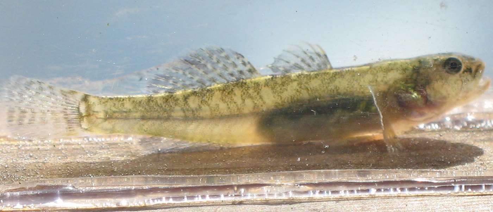

Tidewater goby along the whole California coast

The endangered tidewater goby lives in coastal lagoons and estuaries, where surveys with nets are slow and can miss it. We designed a qPCR assay for the species and showed that water samples detect gobies nearly twice as reliably as seining. We then surveyed roughly 200 sites along all 1,350 km of the California coast, and repeated the survey a year later to estimate how often goby populations wink out and recolonize.
Current work asks how many water samples a site needs and compares field filtration systems side by side. Alongside the eDNA work, we have estimated the size of the Big Lagoon population by mark and recapture every year since 2008.
Read more: Schmelzle and Kinziger 2016, Sutter and Kinziger 2019, Martel et al. 2021